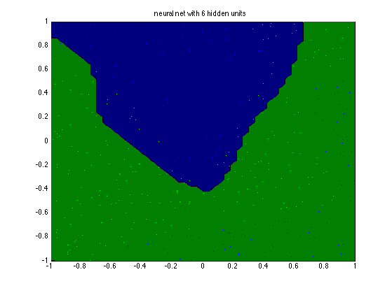

MLP Classification Demo
Based on Mark Schmidt's Demo from
%http://people.cs.ubc.ca/~schmidtm/Software/minFunc/minFunc.html#9
% This file is from pmtk3.googlecode.com H = [3, 6, 9]; H = 6; for hi=1:length(H) nhidden = H(hi); setSeed(0); nVars = 2; nInstances = 400; options.Display = 'final'; options.MaxIter = 100; [X,y] = makeData('classificationNonlinear',nInstances,nVars); [N,D] = size(X); X1 = [ones(N,1) X]; lambda = 1e-2; %model = mlpClassifFitSchmidt(X, y, nhidden, lambda, options); %[yhat, py] = mlpClassifPredictSchmidt(model, X); model = mlpFit(X, y, 'nhidden', nhidden, 'lambda', lambda, ... 'fitOptions', options, 'method', 'schmidt'); [yhat, py] = mlpPredict(model, X); model1 = mlpFit(X, y, 'nhidden', nhidden, 'lambda', lambda, ... 'fitOptions', options, 'method', 'netlab'); [yhat1, py1] = mlpPredict(model, X); assert(approxeq(py, py1)) figure; if length(nhidden)==1 str = sprintf('neural net with %d hidden units', model.nHidden); else str = sprintf('neural net with %d,%d hidden units', ... model.nHidden(1), model.nHidden(2)); end plotClassifier(X1, y, model.w, str, model.nHidden); printPmtkFigure(sprintf('mlpClassifH%d', nhidden)); end
Reached Maximum Number of Iterations Step Size below progTol